전기기사 (2019-08-04 기출문제)
1과목: 전기자기학
1. 도전도 k=6×1017℧m, 투자율
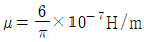
인 평면도체 표면에 10kHz의 전류가 흐를 때, 침투깊이 δ(m)은?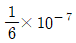
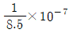
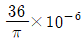
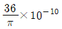
(정답률: 74%)

2. 강자성체의 세 가지 특성에 포함되지 않는 것은?
- 자기포화 특성
- 와전류 특성
- 고투자율 특성
- 히스테리시스 특성
(정답률: 67%)
3. 송전선의 전류가 0.01초 사이에 10kA 변화될 때 이 송전선에 나란한 통신선에 유도되는 유도 전압은 몇 V인가? (단, 송전선과 통신선 간의 상호유도계수는 0.3mH이다.)
- 30
- 300
- 3000
- 30000
(정답률: 78%)
4. 단면적 15cm2의 자석 근처에 같은 단면적을 가진 철편을 놓을 때 그 곳을 통하는 자속이 3×10-4Wb이면 철편에 작용하는 흡인력은 약 몇 N 인가?
- 12.2
- 23.9
- 36.6
- 48.8
(정답률: 47%)
5. 단면적이 s(m2), 단위 길이에 대한 권수가 n(회/m)인 무한히 긴 솔레노이드의 단위 길이당 자기인덕턴스(H/m)는?
- μ·s·n
- μ·s·n2
- μ·s2·n
- μ·s2·n2
(정답률: 86%)
6. 다음 금속 중 저항률이 가장 작은 것은?
- 은
- 철
- 백금
- 알루미늄
(정답률: 70%)
7. 무한장 직선형 도선에 I(A)의 전류가 흐를 경우 도선으로부터 R(m) 떨어진 점의 자속밀도 B(Wb/m2)는?
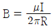
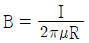
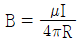
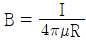
(정답률: 76%)
8. 전하 q(C)가 진공 중의 자계 H(AT/m)에 수직방향으로 v(m/s)의 속도로 움직일 때 받는 힘은 몇 N인가? (단, 진공 중의 투자율은 μo이다.)
- qvH
- μoqH
- πqvH
- μoqvH
(정답률: 74%)
9. 원통 좌표계에서 일반적으로 벡터가 A = 5r sinøaz로 표현될 때 점
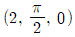
에서 curlA를 구하면?- 5ar
- 5πaø
- -5aø
- -5πaø
(정답률: 53%)
10. 전기 저항에 대한 설명으로 틀린 것은?
- 저항의 단위는 옴(Ω)을 사용한다.
- 저항률(ρ)의 역수를 도전율이라고 한다.
- 금속선의 저항 R은 길이 ℓ에 반비례한다.
- 전류가 흐르고 있는 금속선에 있어서 임의 두 점간의 전위차는 전류에 비례한다.
(정답률: 79%)
11. 자계의 벡터포텐셜을 A라 할 때 자계의 시간적 변화에 의하여 생기는 전계의 세기 E는?
- E = rot A
- rot E = A
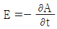
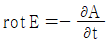
(정답률: 66%)
12. 환상철심의 평균 자계의 세기가 3000AT/m이고, 비투자율이 600인 철심 중의 자화의 세기는 약 몇 Wb/m2 인가?
- 0.75
- 2.26
- 4.52
- 9.04
(정답률: 76%)
13. 평행판 콘덴서의 극간 전압이 일정한 상태에서 극간에 공기가 있을 때의 흡인력을 F1, 극판 사이에 극판 간격의 2/3 두께의 유리판(εr=10)을 삽입할 때의 흡인력을 F2라 하면
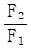
는?- 0.6
- 0.8
- 1.5
- 2.5
(정답률: 55%)
14. 전자파의 특성에 대한 설명으로 틀린 것은?
- 전자파의 속도는 주파수와 무관하다.
- 전파 Ex를 고유임피던스로 나누면 자파 Hy가 된다.
- 전파 Ex와 자파 Hy의 진동방향은 진행 방향에 수평인 종파이다.
- 매질이 도전성을 갖지 않으면 전파 Ex와 자파 Hy는 동위상이 된다.
(정답률: 74%)
15. 진공 중에서 점 P(1, 2, 3) 및 점 Q(2, 0, 5)에 각각 300μC, -100μC인 점전하가 놓여 있을 때 점전하 -100μC에 작용하는 힘은 몇 N인가?
- 10i – 20j + 20k
- 10i + 20j - 20k
- -10i + 20j + 20k
- -10i + 20j - 20k
(정답률: 48%)
16. 반지름 a(m)의 구 도체에 전하 Q(C)가 주어질 때 구 도체 표면에 작용하는 정전응력은 몇 N/m2인가?
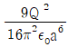
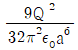
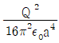
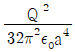
(정답률: 50%)
17. 정전용량이 각각 C1, C2, 그 사이의 상호 유도계수가 M인 절연된 두 도체가 있다. 두 도체를 가는 선으로 연결할 경우, 정전용량은 어떻게 표현되는가?
- C1 + C2 - M
- C1 + C2 + M
- C1 + C2 + 2M
- 2C1 + 2C2 + M
(정답률: 79%)
18. 길이 ℓ(m)인 동축 원통 도체의 내외원통에 각각 +λ, -λ(C/m)의 전하가 분포되어 있다. 내외원통 사이에 유전율 ε인 유전체가 채워져 있을 때, 전계의 세기(V/m)은? (단, V는 내외원통 간의 전위차, D는 전속밀도이고, a, b는 내외원통의 반지름이며, 원통 중심에서의 거리 r은 a ＜ r ＜ b인 경우이다.)
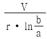
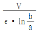
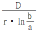
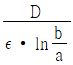
(정답률: 54%)
19. 정전용량이 1μF 이고 판의 간격이 d인 공기콘덴서가 있다. 두께
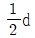
, 비유전율 εr=2 유전체를 그 콘덴서의 한 전극면에 접촉하여 넣었을 때 전체의 정전용량(μF)은?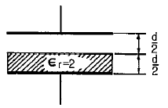
- 2
- 1/2
- 4/3
- 5/3
(정답률: 73%)
20. 변위전류와 가장 관계가 깊은 것은?
- 도체
- 반도체
- 유전체
- 자성체
(정답률: 85%)
2과목: 전력공학
21. 역률 80%, 500kVA의 부하설비에 100kVA의 진상용 콘덴서를 설치하여 역률을 개선하면 수전점에서의 부하는 약 몇 kVA가 되는가?
- 400
- 425
- 450
- 475
(정답률: 48%)
22. 가공지선에 대한 설명 중 틀린 것은?
- 유도뢰 서지에 대하여도 그 가설구간 전체에 사고방지의 효과가 있다.
- 직격뢰에 대하여 특히 유효하며 탑 상부에 시설하므로 뇌는 주로 가공지선에 내습한다.
- 송전선의 1선 지락 시 지락전류의 일부가 가공지선에 흘러 차폐작용을 하므로 전자유도장해를 적게 할 수 있다.
- 가공지선 때문에 송전선로의 대지정전용량이 감소하므로 대지사이에 방전할 때 유도전압이 특히 커서 차폐 효과가 좋다.
(정답률: 65%)
23. 부하전류의 차단에 사용되지 않는 것은?
- DS
- ACB
- OCB
- VCB
(정답률: 83%)
24. 플리커 경감을 위한 전력 공급측의 방안이 아닌 것은?
- 공급전압을 낮춘다.
- 전용 변압기로 공급한다.
- 단독 공급계통을 구성한다.
- 단락용량이 큰 계통에서 공급한다.
(정답률: 71%)
25. 3상 무부하 발전기의 1선 지락 고장 시에 흐르는 지락 전류는? (단, E는 접지된 상의 무부하 기전력이고, Z0, Z1, Z2는 발전기의 영상, 정상, 역상 임피던스이다.)
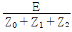
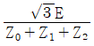
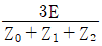
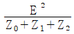
(정답률: 75%)
26. 수력발전소의 분류 중 낙차를 얻는 방법에 의한 분류 방법이 아닌 것은?
- 댐식 발전소
- 수로식 발전소
- 양수식 발전소
- 유역 변경식 발전소
(정답률: 61%)
27. 변성기의 정격부담을 표시하는 단위는?
- W
- S
- dyne
- VA
(정답률: 73%)
28. 원자로에서 중성자가 원자로 외부로 유출되어 인체에 위험을 주는 것을 방지하고 방열의 효과를 주기 위한 것은?
- 제어재
- 차폐재
- 반사체
- 구조재
(정답률: 79%)
29. 연가에 의한 효과가 아닌 것은?
- 직렬공진의 방지
- 대지정전용량의 감소
- 통신선의 유도장해 감소
- 선로정수의 평형
(정답률: 67%)
30. 각 전력계통을 연계선으로 상호 연결하였을 때 장점으로 틀린 것은?
- 건설비 및 운전경비를 절감하므로 경제급전이 용이하다.
- 주파수의 변화가 작아진다.
- 각 전력계통의 신뢰도가 증가된다.
- 선로 임피던스가 증가되어 단락전류가 감소된다.
(정답률: 67%)
31. 전압요소가 필요한 계전기가 아닌 것은?
- 주파수 계전기
- 동기탈조 계전기
- 지락 과전류 계전기
- 방향성 지락 과전류 계전기
(정답률: 40%)
32. 수력발전설비에서 흡출관을 사용하는 목적으로 옳은 것은?
- 압력을 줄이기 위하여
- 유효낙차를 늘리기 위하여
- 속도변동률을 적게 하기 위하여
- 물의 유선을 일정하게 하기 위하여
(정답률: 74%)
33. 인터록(interlock)의 기능에 대한 설명으로 옳은 것은??
- 조작자의 의중에 따라 개폐되어야 한다.
- 차단기가 열려 있어야 단로기를 닫을 수 있다.
- 차단기가 닫혀 있어야 단로기를 닫을 수 있다.
- 차단기와 단로기를 별도로 닫고, 열 수 있어야 한다.
(정답률: 77%)
34. 같은 선로와 같은 부하에서 교류 단상 3선식은 단상 2선식에 비하여 전압강하와 배전효율이 어떻게 되는가?
- 전압강하는 적고, 배전효율은 높다.
- 전압강하는 크고, 배전효율은 낮다.
- 전압강하는 적고, 배전효율은 낮다.
- 전압강하는 크고, 배전효율은 높다.
(정답률: 69%)
35. 전력 원선도에서는 알 수 없는 것은?
- 송수전할 수 있는 최대전력
- 선로 손실
- 수전단 역률
- 코로나손
(정답률: 78%)
36. 가공선 계통은 지중선 계통보다 인덕턴스 및 정전용량이 어떠한가?
- 인덕턴스, 정전용량이 모두 작다.
- 인덕턴스, 정전용량이 모두 크다.
- 인덕턴스는 크고, 정전용량은 작다.
- 인덕턴스는 작고, 정전용량은 크다.
(정답률: 59%)
37. 송전선의 특성임피던스는 저항과 누설 컨덕턴스를 무시하면 어떻게 표현되는가? (단, L은 선로의 인덕턴스, C는 선로의 정전용량이다.)
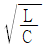
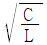
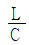
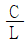
(정답률: 81%)
38. 다음 중 송전선로의 코로나 임계전압이 높아지는 경우가 아닌 것은?
- 날씨가 맑다.
- 기압이 높다
- 상대공기밀도가 낮다.
- 전선의 반지름과 선간거리가 크다.
(정답률: 68%)
39. 어느 수용가의 부하설비는 전등설비가 500W, 전열설비가 600W, 전동기 설비가 400W, 기타설비가 100W 이다. 이 수용가의 최대수용전력이 1200W이면 수용률은 몇 %인가?
- 55
- 65
- 75
- 85
(정답률: 75%)
40. 케이블의 전력 손실과 관계가 없는 것은?
- 철손
- 유전체손
- 시스손
- 도체의 저항손
(정답률: 49%)
3과목: 전기기기
41. 동기발전기의 돌발 단락 시 발생되는 현상으로 틀린 것은?
- 큰 과도전류가 흘러 권선 소손
- 단락전류는 전기자 저항으로 제한
- 코일 상호간 큰 전자력에 의한 코일 파손
- 큰 단락전류 후 점차 감소하여 지속 단락전류 유지
(정답률: 52%)
42. SCR의 특징으로 틀린 것은?
- 과전압에 약하다..
- 열용량이 적어 고온에 약하다.
- 전류가 흐르고 있을 때의 양극 전압강하가 크다.
- 게이트에 신호를 인가할 때부터 도통할 때까지의 시간이 짧다.
(정답률: 56%)
43. 터빈 발전기의 냉각을 수소냉각방식으로 하는 이유로 틀린 것은?
- 풍손이 공기 냉각 시의 양 1/10로 줄어든다.
- 열전도율이 좋고 가스냉각기의 크기가 작아진다.
- 절연물의 산화작용이 없으므로 절연열화가 작아서 수명이 길다.
- 반폐형으로 하기 때문에 이물질의 침입이 없고 소음이 감소한다.
(정답률: 71%)
44. 단상 유도전동기의 특징을 설명한 것으로 옳은 것은?
- 기동 토크가 없으므로 기동장치가 필요하다.
- 기계손이 있어도 무부하 속도는 동기속도보다 크다.
- 권선형은 비례추이가 불가능하며, 최대 토크는 불변이다.
- 슬립은 0＞S＞-1 이고, 2보다 작고 0이 되기 전에 토크가 0이 된다.
(정답률: 59%)
45. 몰드변압기의 특징으로 틀린 것은?(문제 오류로 가답안 발표시 4번으로 발표되었지만 확정답안 발표시 모두 정답처리 되었습니다. 여기서는 가답안인 4번을 누르면 정답 처리 됩니다.)
- 자기 소화성이 우수하다.
- 소형 경량화가 가능하다.
- 건식변압기에 비해 소음이 적다.
- 유입변압기에 비해 절연레벨이 낮다.
(정답률: 77%)
46. 유도전동기의 회전속도를 N(rpm), 동기속도를 Ns(rpm)이라하고 순방향 회전자계의 슬립을 s라고 하면, 역방향 회전자계에 대한 회전자 슬립은?
- s-1
- 1-s
- s-2
- 2-s
(정답률: 60%)
47. 직류발전기에 직결한 3상 유도전동기가 있다. 발전기의 부하 100kW, 효율 90%이며 전동기 단자전압 3300V, 효율 90%, 역률 90%이다. 전동기에 흘러들어가는 전류는 약 몇 A인가?
- 2.4
- 4.8
- 19
- 24
(정답률: 39%)
48. 유도발전기의 동작특성에 관한 설명 중 틀린 것은?
- 병렬로 접속된 동기발전기에서 여자를 취해야 한다.
- 효율과 역률이 낮으며 소출력의 자동수력발전기와 같은 용도에 사용된다.
- 유도발전기의 주파수를 증가하려면 회전속도를 동기속도 이상으로 회전시켜야 한다.
- 선로에 단락이 생긴 경우에는 여자가 상실되므로 단락전류는 동기발전기에 비해 적고 지속시간도 짧다.
(정답률: 43%)
49. 단상 변압기를 병렬 운전하는 경우 각 변압기의 부하분담이 변압기의 용량에 비례하려면 각각의 변압기의 %임피던스는 어느 것에 해당되는가?
- 어떠한 값이라도 좋다.
- 변압기 용량에 비례하여야 한다.
- 변압기 용량에 반비례하여야 한다.
- 변압기 용량에 관계없이 같아야 한다.
(정답률: 53%)
50. 그림은 여러 직류전동기의 속도 특성곡선을 나타낸 것이다. 1부터 4까지 차례로 옳은 것은?
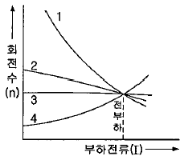
- 차동복권, 분권, 가동복권, 직권
- 직권, 가동복권, 분권, 차동복권
- 가동복권, 차동복권, 직권, 분권
- 분권, 직권, 가동복권, 차동복권
(정답률: 72%)
51. 전력변환기기로 틀린 것은?
- 컨버터
- 정류기
- 인버터
- 유도전동기
(정답률: 71%)
52. 농형 유도전동기에 주로 사용되는 속도제어법은?
- 극수 변환법
- 종속 접속법
- 2차 저항제어법
- 2차 여자제어법
(정답률: 71%)
53. 정격전압 100V, 정격전류 50A인 분권발전기의 유기기전력은 몇 V 인가? (단, 전기자 저항 0.2Ω, 계자전류 및 전기자 반작용은 무시한다.)
- 110
- 120
- 125
- 127.5
(정답률: 74%)
54. 그림과 같은 변압기 회로에서 부하 R2에 공급되는 전력이 최대로 되는 변압기의 권수비 a는?
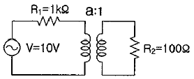
- √5
- √10
- 5
- 10
(정답률: 63%)
55. 변압기의 백분율 저항강하가 3%, 백분율 리액턴스 강하가 4%일 때 뒤진 역률 80%인 경우의 전압변동률(%)은?
- 2.5
- 3.4
- 4.8
- -3.6
(정답률: 64%)
56. 정류자형 주파수변환기의 회전자에 주파수 f1의 교류를 가할 때 시계방향으로 회전자계가 발생하였다. 정류자 위의 브러시 사이에 나타나는 주파수 fc를 설명한 것 중 틀린 것은? (단, n : 회전자의 속도, ns : 회전자계의 속도, s : 슬립이다.)
- 회전자를 정지시키면 fc=f1인 주파수가 된다.
- 회전자를 반시계방향으로 n=ns의 속도로 회전시키면, fc=0Hz가 된다.
- 회전자를 반시계방향으로 n＜ns의 속도로 회전시키면, fc=sf1(Hz)가 된다.
- 회전자를 시계방향으로 n＜ns의 속도로 회전시키면, fc＜f1인 주파수가 된다.
(정답률: 42%)
57. 동기발전기의 3상 단락곡선에서 단락전류가 계자전류에 비례하여 거의 직선이 되는 이유로 가장 옳은 것은?
- 무부하 상태이므로
- 전기자 반작용으로
- 자기포화가 있으므로
- 누설 리액턴스가 크므로
(정답률: 64%)
58. 1차 전압 V1, 2차 전압 V2인 단권변압기를 Y결선했을 때, 등가용량과 부하용량의 비는? (단, V1＞V2이다.)
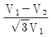
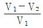
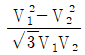
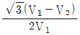
(정답률: 63%)
59. 변압기의 보호에 사용되지 않는 것은?
- 온도계전기
- 과전류계전기
- 임피던스계전기
- 비율차등계전기
(정답률: 53%)
60. E를 전압, r을 1차로 환산한 저항, χ를 1차로 환산한 리액터스라고 할 때 유도전동기의 원선도에서 원의 지름을 나타내는 것은?
- E·r
- E·χ
- E/x
- E/r
(정답률: 53%)
4과목: 회로이론 및 제어공학
61. 그림의 벡터 궤적을 갖는 계의 주파수 전달함수는?
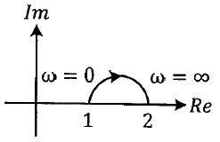
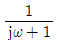
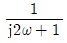
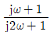
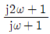
(정답률: 55%)
62. 근궤적에 관한 설명으로 틀린 것은?
- 근궤적은 실수축에 대하여 상하 대칭으로 나타난다.
- 근궤적의 출발점은 극점이고 근궤적의 도착점은 영점이다.
- 근궤적의 가지 수는 극점의 수와 영점의 수 중에서 큰 수와 같다.
- 근궤적이 s 평면의 우반면에 위치하는 K의 범위는 시스템이 안정하기 위한 조건이다.
(정답률: 65%)
63. 제어시스템에서 출력이 얼마나 목표값을 잘 추종하는지를 알아볼 때, 시험용으로 많이 사용되는 신호로 다음 식의 조건을 만족하는 것은?
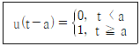
- 사인함수
- 임펄스함수
- 램프함수
- 단위계단함수
(정답률: 65%)
64. 특성방적식 s2+Ks+2K-1=0 인 계가 안정하기 위한 K의 범위는?
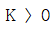
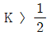
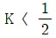
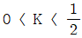
(정답률: 61%)
65. 상태공간 표현식
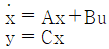
로 표현되는 선형 시스템에서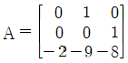
,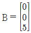
, C = [1 0 0], D = 0, 이면 시스템 전달함수 는?(정답률: 63%)
66. Routh-Hurwitz 표에서 제 1열의 부호가 변하는 횟수로부터 알 수 있는 것은?
- s-평면의 좌반면에 존재하는 근의 수
- s-평면의 우반면에 존재하는 근의 수
- s-평면의 허수축에 존재하는 근의 수
- s-평면의 원점에 존재하는 근의 수
(정답률: 64%)
67. 그림의 블록선도에 대한 전달함수 C/R는?
(정답률: 75%)
68. 신호흐름선도의 전달함수 로 옳은 것은?
(정답률: 71%)
69. 부울 대수식 중 틀린 것은?
- A + 1 = 1
- A + A = A
- A · A = A
(정답률: 64%)
70. 함수 e-at의 z 변환으로 옳은 것은?
(정답률: 69%)
71. 4단자 회로망에서 4단자 정수가 A, B, C, D일 때, 영상 임피던스 은?
(정답률: 60%)
72. RL 직렬회로에서 R=20Ω, L=40mH일 때, 이 회로의 시정수(sec)는?
- 2 × 103
- 2 × 10-3
(정답률: 67%)
73. 비정현파 전류가 i(t) = 56sinωt + 20sin2ωt + 30sin(3ωt+ 30°) + 40sin(4ωt + 60°)로 표현될 때, 왜형률은 약 얼마인가?
- 1.0
- 0.96
- 0.55
- 0.11
(정답률: 60%)
74. 대칭 6상 성형(star)결선에서 선간전압 크기와 상전압 크기의 관계로 옳은 것은? (단, Vl : 선간전압 크기, Vp : 상전압 크기)
(정답률: 55%)
75. 3상 불평형 전압 Va, Vb, Vc가 주어진다면, 정상분 전압은? (단, a = ej2π/3 = 1∠120° 이다.)
- Va + a2Vb + aVc
- Va + aVb + a2Vc
- (Va + a2Vb + aVc)
 (Va + aVb + a2Vc)
(Va + aVb + a2Vc)
(정답률: 67%)
76. 송전선로가 무손실 선로일 때, L=96mH 이고 C=0.6μF 이면 특성임피던스(Ω)는?
- 100
- 200
- 400
- 600
(정답률: 70%)
77. 커페시터와 인덕터에서 물리적으로 급격히 변화할 수 없는 것은?
- 커페시터와 인덕터에서 모두 전압
- 커페시터와 인덕터에서 모두 전류
- 커페시터에서 전류, 인덕터에서 전압
- 커페시터에서 전압, 인덕터에서 전류
(정답률: 58%)
78. 2전력계법을 이용한 평형 3상회로의 전력이 각각 500W 및 300W로 측정되었을 때, 부하의 역률은 약 몇 % 인가?
- 70.7
- 87.7
- 89.2
- 91.8
(정답률: 52%)
79. 인덕턴스가 0.1H인 코일에 실효값 100V, 60Hz, 위상 30도인 전압을 가했을 때 흐르는 전류의 실효값 크기는 약 몇 A 인가?
- 43.7
- 37.7
- 5.46
- 2.65
(정답률: 52%)
80. f(t) = δ(t – T)의 라플라스변환 F(s)는?
- eTs
- e-Ts
(정답률: 44%)
5과목: 전기설비기술기준 및 판단기준
81. 고압 가공전선로의 지지물로 철탑을 사용한 경우 최대경간은 몇 m 이하이어야 하는가?
- 300
- 400
- 500
- 600
(정답률: 51%)
82. 폭발성 또는 연소설의 가스가 침입할 우려가 있는 것에 시설하는 지중함으로서 그 크기가 몇 m3 이상의 것은 통풍장치 기타 가스를 방산시키기 위한 적당한 장치를 시설하여야 하는가?
- 0.9
- 1.0
- 1.5
- 2.0
(정답률: 71%)
83. 사용전압 35000V인 기계기구를 옥외에 시설하는 개폐소의 구내에 취급자 이외의 자가 들어가지 않도록 울타리를 설치할 때 울타리와 특고압의 충전부분이 접근하는 경우에는 울타리의 높이와 울타리로부터 충전부분까지의 거리의 합은 최소 몇 m 이상이어야 하는가?
- 4
- 5
- 6
- 7
(정답률: 49%)
84. 다음의 ⓐ, ⓑ에 들어갈 내용으로 옳은 것은?
- ⓐ 1.1, ⓑ 1
- ⓐ 1.2, ⓑ 1
- ⓐ 1.25, ⓑ 2
- ⓐ 1.3, ⓑ 2
(정답률: 60%)
85. 지중 전선로를 직접 매설식에 의하여 시설하는 경우에는 매설 깊이를 차량 기타 중량물의 압력을 받을 우려가 있는 장소에서는 몇 cm 이상으로 하면 되는가?(2021년 변경된 KEC 규정 적용됨)
- 40
- 60
- 100
- 120
(정답률: 65%)
86. 저압 가공전선이 건조물의 상부 조영재 옆쪽으로 접근하는 경우 저압 가공전선과 건조물의 조영재 사이의 이격거리는 몇 m 이상이어야 하는가? (단, 전선에 사람이 쉽게 접촉할 우려가 없도록 시설한 경우와 전선이 고압 절연전선, 특고압 절연전선 또는 케이블인 경우는 제외한다.)
- 0.6
- 0.8
- 1.2
- 2.0
(정답률: 48%)
87. 변압기의 고압측 전로와의 혼촉에 의하여 저압측 전로의 대지전압이 150V를 넘는 경우에 2초 이내에 고압전로를 자동 차단하는 장치가 되어 있는 6600/220V 배전선로에 있어서 1선 지락 전류가 2A이면 제2종 접지저항 값의 최대는 몇 Ω 인가?
- 50
- 75
- 150
- 300
(정답률: 43%)
88. 저압 옥내간선은 특별한 경우를 제외하고 다음 중 어느 것에 의하여 그 굵기가 결정되는가?
- 전기방식
- 허용전류
- 수전방식
- 계약전력
(정답률: 68%)
89. 휴대용 또는 이동용의 전력보안 통신용 전화설비를 시설하는 곳은 특고압 가공전선로 및 선로길이가 몇 km 이상의 고압 가공전선로인가?(관련 규정 개정전 문제로 여기서는 기존 정답인 2번을 누르면 정답 처리됩니다. 자세한 내용은 해설을 참고하세요.)
- 2
- 5
- 10
- 15
(정답률: 55%)
90. 폭연성 분진 또는 화약류의 분말이 존재하는 곳의 저압 옥내배선은 어느 공사에 의하는가?
- 금속관 공사
- 애자사용 공사
- 합성수지관 공사
- 캡타이어 케이블 공사
(정답률: 56%)
91. 강체방식에 의하여 시설하는 직류식 전기 철도용 전차 선로는 전차선의 높이가 지표상 몇 m 이상인가?(관련 규정 개정전 문제로 여기서는 기존 정답인 3번을 누르면 정답 처리됩니다. 자세한 내용은 해설을 참고하세요.)
- 3
- 4
- 5
- 7
(정답률: 55%)
92. 저압 옥내전로의 인입구에 가까운 곳으로서 쉽게 개폐할 수 있는 곳에 개폐기를 시설하여야 한다. 그러나 사용전압이 400V미만인 옥내전로로서 다른 옥내전로에 접속하는 길이가 몇 m 이하인 경우는 개폐기를 생략할 수 있는가? (단, 정격전류가 15A 이하인 과전류 차단기 또는 정격전류가 15A를 초과하고 20A 이하인 배선용 차단기로 보호되고 있는 것에 한한다.)
- 15
- 20
- 25
- 30
(정답률: 40%)
93. 지중 전선로는 기설 지중 약전류 전선로에 대하여 다음의 어느 것에 의하여 통신상의 장해를 주지 아니하도록 기설 약전류 전선로로부터 충분히 이격시키는가?
- 충전전류 또는 표피작용
- 충전전류 또는 유도작용
- 누설전류 또는 표피작용
- 누설전류 또는 유도작용
(정답률: 63%)
94. 특고압 전로에 사용하는 수밀형 케이블에 대한 설명으로 틀린 것은?(오류 신고가 접수된 문제입니다. 반드시 정답과 해설을 확인하시기 바랍니다.)
- 사용전압이 25kV 이하일 것
- 도체는 경알루미늄선을 소선으로 구성한 원형압축 연선일 것
- 내부 반도전층은 절연층과 완전 밀착되는 압출 반도전층으로 두께의 최소값은 0.5 mm 이상일 것
- 외부 반도전층은 절연층과 밀착되어야 하고, 또한 절연층과 쉽게 분리되어야 하며, 두께의 최소값은 1mm 이상일 것
(정답률: 34%)
95. 일반주택 및 아파트 각 호실의 현관등은 몇 분 이내에 소등되는 타임스위치를 시설하여야 하는가?
- 1분
- 3분
- 5분
- 10분
(정답률: 65%)
96. 발전소에서 장치를 시설하여 계측하지 않아도 되는 것은?
- 발전기의 회전자 온도
- 특고압용 변압기의 온도
- 발전기의 전압 및 전류 또는 전력
- 주요 변압기의 전압 및 전류 또는 전력
(정답률: 54%)
97. 백열전등 또는 방전등에 전기를 공급하는 옥내전로의 대지전압은 몇 V 이하이어야 하는가?
- 440
- 380
- 300
- 100
(정답률: 71%)
98. 66000V 가공전선과 6000V 가공전선을 동일 지지물에 병가하는 경우, 특고압 가공전선으로 사용하는 경동연선의 굵기는 몇 mm2 이상이어야 하는가?(2021년 변경된 KEC 규정 적용)
- 22
- 38
- 50
- 100
(정답률: 53%)
99. 저압 또는 고압의 가공 전선로와 기설 가공 약전류 전선로가 병행할 때 유도작용에 의한 통신상의 장해가 생기지 않도록 전선과 기설 약전류 전선간의 이격거리는 몇 m 이상이어야 하는가? (단, 전기철도용 급전선로는 제외한다.)
- 2
- 3
- 4
- 6
(정답률: 47%)
100. 가공전선로의 지지물에 하중이 가하여지는 경우에 그 하중을 받는 지지물의 기초 안전율은 특별한 경우를 제외하고 최소 얼마 이상인가?
- 1.5
- 2
- 2.5
- 3
(정답률: 58%)
δ = (2/πfμσ)1/2
여기서 f는 주파수, μ는 자기투자율, σ는 전기전도도이다.
주어진 값으로 대입하면,
δ = (2/π x 10kHz x 4π x 10-7 x 6 x 1017)1/2 ≈ 0.001 m
따라서 정답은 ""이다.
이유는 침투깊이는 전기전도도와 자기투자율에 반비례하고, 주파수에 반비례하는 것을 이용하여 계산하였기 때문이다.